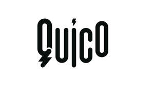

Trade Mark Journal No.2025/032 8 August 2025
UK00004231441 9 July 2025 (3,8,11,21)

- Class 3
- After-shave lotions; baby wipes impregnated with cleaning preparations; bath preparations, not for medical purposes; bath salts, not for medical purposes; beauty masks; cleaning preparations; cosmetic creams; cosmetics; cotton swabs for cosmetic purposes; deodorants for human beings or for animals; depilatories; douching preparations for personal sanitary or deodorant purposes [toiletries]; dry shampoos; essential oils; false eyelashes; hair colorants; hair conditioners; hair dyes; hair lotions; lotions for cosmetic purposes; make-up; massage candles for cosmetic purposes; massage gels, other than for medical purposes; nail polish; nail polish removers; perfumes; pomades for cosmetic purposes; shampoos; shaving preparations; sheet masks for cosmetic purposes; skin hydrators for cosmetic purposes; soap; sunscreen preparations; toiletry preparations.
- Class 8
- Beard clippers; depilation appliances, electric and non-electric; eyelash curlers; fingernail polishers, electric or non-electric; flat irons; hair braiders, electric; hair clippers for animals [hand instruments]; hair clippers for personal use, electric and non-electric; hair-removing tweezers; manicure sets; manicure sets, electric; nail buffers, electric or non-electric; nail clippers, electric or non-electric; nail files; nail files, electric; nail nippers; nippers; pedicure sets; razor blades; razors, electric or non-electric; scissors; tweezers; tweezers, hand-operated; curling tongs; crimping irons; hair curling apparatus and implements; hair curling irons; hair styling implements; hair tongs; hair waving tongs; hand implements for hair curling; hand tools and instruments, all relating to hairdressing and personal grooming; hair straighteners; electric irons for styling hair; electric hair crimper; electric hair straightening irons; electric and battery-powered hair trimmers; electric and battery-powered hair clippers; electric hair cutting appliances; electric hair shavers; hair curling apparatus and implements; hair cutting scissors; laser hair removal apparatus, other than for medical purposes; boxes adapted for cutlery; coffee spoons; cutlery articles; cutters; food cutters and choppers; fruit corers; fruit peelers; hand implements for kitchen use; hand tools, hand-operated; hand-operated hand tools and apparatus for household and kitchen use; non-electric fruit and vegetable slicers; table knives, forks and spoons of plastic; tableware [knives, forks and spoons]; tea spoons; wine bottle foil cutters; parts, fittings and accessories for all the aforesaid goods.
- Class 11
- Hair dryers; hand-held hair dryers; hair dryer diffusers; apparatus for heating hair; apparatus for use in dressing hair; electric hair dryers; fans for hair drying; hair drying appliances; apparatus for making ices and ice cream, electric; bed warmers; blankets, electric, not for medical purposes; coffee machines incorporating water purifiers; cookers; cooking utensils, electric; electric flashlights; electric torches; electrically heated mugs; footwarmers, electric or non-electric; heating and cooling apparatus for dispensing hot and cold beverages; heating apparatus; heating apparatus, electric; hot water bottles; humidifiers; ice-cream making machines; steam facial apparatus [saunas]; USB-powered cup heaters; USB-powered hand warmers; apparatus for making coffee; coffee bean roasting machines; coffee capsules, empty, for electric coffee machines; electric apparatus for making coffee; electric coffee brewers; electric coffee machines; electric coffee makers; electric coffee making apparatus; electric coffee making machines; electric coffee percolators; electric coffee roasters; electric coffeepots; electrical coffee brewing apparatus for household use; air fryers; air purifying apparatus and machines; apparatus and installations for cooking; apparatus for baking; apparatus for heating; apparatus for toasting; appliances for cooking; appliances for heating beverages; barbecue apparatus; beverage cooling apparatus; boilers; bread toasters; cappuccino makers; coffee machines, electric; coffee percolators, electric; coffee roasters; combination of refrigerators and freezers; convection ovens; cooking apparatus and installations; electric appliances for making beverages; electric bread toasters; electric cooking apparatus; electric fans; electric lighting apparatus; electric ovens; electric saucepans; electrical water heaters for making beverages; extractor hoods for kitchens; fabric steamers; fondues [cooking apparatus]; food steamers, electric; food warmers; fruit roasters; grilling apparatus; hot air ovens; kettles, electric; lighting apparatus and installations; microwave ovens; multicookers; parts, fittings and accessories for all the aforesaid goods.
- Class 21
- Cosmetic utensils; eyebrow brushes; eyelash brushes; heads for electric toothbrushes; lint removers, electric or non-electric; make-up brushes; make-up removing appliances; make-up sponges; mugs; nail brushes; powder puffs; smoke absorbers for household purposes; toothbrushes; toothbrushes, electric; vacuum bottles; bottles; cases for combs; combs for the hair; combs for the hair (electric); electric combs and toothbrushes; large-toothed combs for the hair; electric hair brushes; hair brushes; tea infusers; coffee filters (non-electric); coffee grinders, hand operated; coffee makers (non-electric); coffee mugs; coffee percolators, non-electric; coffee services [tableware]; hand-operated coffee grinders and coffee mills; insulating containers for coffee and tea; non-electric coffeepots; non-electric drip coffee makers; tea and coffee services; baking containers; baking mats; blenders, non-electric, for household purposes; bread bins; brushes; containers for home and kitchen; cooking pot sets; cooking utensils, non-electric; cruets; crushers for kitchen use, non-electric; cups; cutting boards for the kitchen; deep fryers, non-electric; deodorizing apparatus for personal use; dishes; drinking bottles for sports; dustbins; food steamers, non-electric; fruit presses, non-electric, for household purposes; garlic presses [kitchen utensils]; graters for kitchen use; griddles [cooking utensils]; grills [cooking utensils]; heat-insulated containers for beverages; hot pots, not electrically heated; insulating flasks; kettles, non-electric; kitchen containers; kitchen grinders, non-electric; kitchen mitts; kitchen utensils; hand-operated food grinders; lunch boxes; molds [kitchen utensils]; thermally insulated containers for food; parts, fittings and accessories for all the aforesaid goods.
Joint Star Inc. Limited
Representative: Reddie & Grose LLP